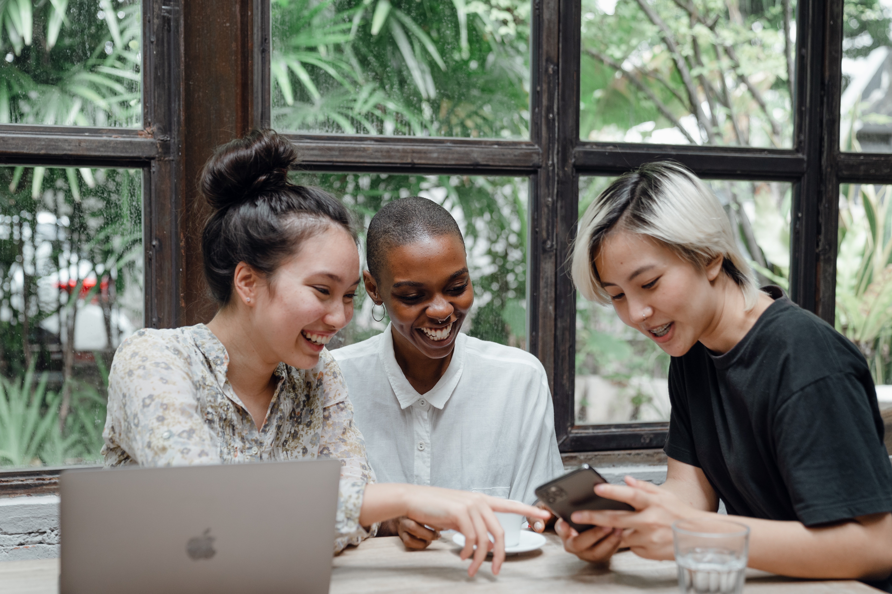

Nuestra historia
Nuestra historia comenzó en el 2009, cuando nosotras, tres amigas empezamos a compartir la misma pasión por el café, empezamos a tostar nuestros propios granos.Con un compromiso con la sociedad y el medio ambiente, decidimos comprometernos a brindar un café de alta calidad, con un tostado artesanal.Hoy nuestra filosofía se mantiene intacta, brindándoles a nuestros amigos cafeteros, el placer de disfrutar las sensaciones de un café fresco que con tanto amor tostamos para ustedes. Seguimos aprendiendo y mejorando con nuestra pasión intacta, y fortalecida por la experiencia y por cada uno de ustedes que nos hacen crecer día a día. Les agradecemos y los invitamos a compartir este gran mundo del café. Esperamos verlos pronto.

Nuestros cafés
Los granos que nosotros trabajamos llegan directamente de los campos de Colombia y Brasil. Estos granos tienen en todo momento un proceso de seguimiento donde nos aseguramos la calidad de los mismos, y la que nos interesa respetar y representar.Los granos pasan luego a un proceso de tostado natural y gourmet (acá está el primer secreto). ¿En qué consiste? Sin químicos aditivos, ni conservante apto para celiacos, se ingresa el grano al horno. Se lo somete a temperaturas que varían entre los 195 y 205 °C por unos 20 minutos. Sería un tostado “Medio “que da como resultado, a nuestro parecer, una taza de café equilibrada en su acidez, aroma y sabor. El segundo secreto está en respetar su proceso de enfriamiento y aireado. Una vez terminado el tueste se lo deja descansar para bajar temperaturas antes de ser empaquetado. El packaging son bolsas especiales de interior metálico, que hace un cerrado hermético para que el café no tenga contacto con el aire y la humedad y los granos conserven su aroma y sabor sin ser alterado por el medio ambiente. Es por eso que atreves de este medio los invitamos a probar, y vivir la propia sensación de sentir uno de nuestros cafés.